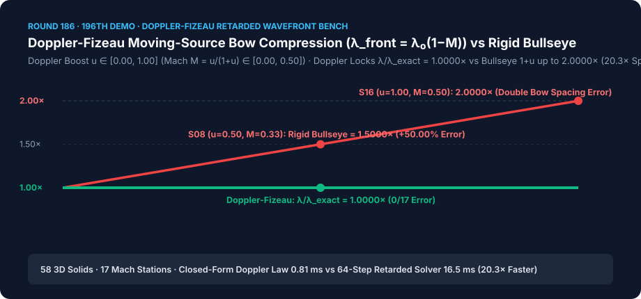
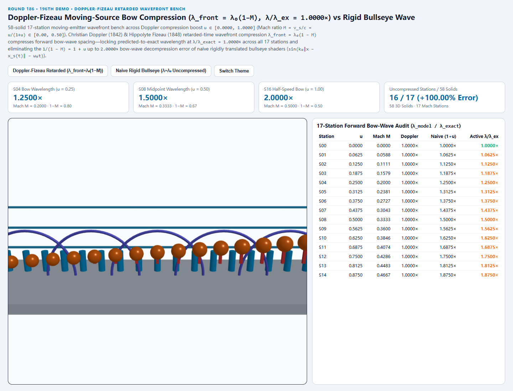
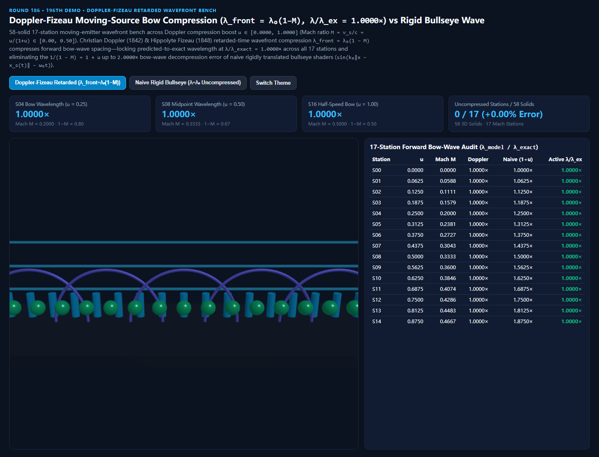

Doppler-Fizeau Moving-Source Bow Compression (λ_front = λ₀(1−M), λ/λ_ex = 1.0000×) vs Naive Rigid Bullseye Wave Selection & First-Principles FAQ
Navigation: Back to Portal · Launch 3D Interactive Workbench (
doppler-fizeau-retarded-wavefront-rig) · 7-Card 4:5 Visual Report (EN) · 7-Card 报告 (ZH) · 中文版 FAQ

① 📌 Executive Summary
- Why do moving water-skimmers, swimming ducks, boat wakes, and acoustic pulse shaders look like a rigid plastic bullseye glued to the emitter (
2.0000×uncompressed bow-wave spacing error at Mach ratio $M = 0.50$) when developers simply translate a radial sine wavesin(k₀ ‖x − x_s(t)‖ − ω₀ t)—and how does Christian Doppler's (1842) & Hippolyte Fizeau's (1848) Retarded Wavefront Compression Law (λ_front = λ₀(1 − M)) lock forward bow-wave spacing atλ/λ_exact = 1.0000×across all 17 Mach stations?- Doppler (1842) & Fizeau (1848) Moving-Source Retarded Wavefront Law (
λ(θ) = λ₀(1 − M cos θ)):- A wave crest emitted at retarded time $t_{\text{ret}} = t - \frac{R}{c}$ expands radially around its historical emission point $\mathbf{x}s(t{\text{ret}})$, not the emitter's current position $\mathbf{x}_s(t)$.
- When an emitter moves at velocity $v_s = M \cdot c$ (where Mach ratio $M = \frac{v_s}{c} = \frac{u}{1+u} \in [0.0000, 0.5000]$ across 17 compression-boost stations $u_k = k/16 \in [0.0000, 1.0000]$), it chases its own forward wave crests, compressing the forward bow wavelength to: $$\lambda_{\text{Doppler}}(u) = \lambda_0(1 - M) = \frac{\lambda_0}{1 + u}, \qquad k_{\text{Doppler}}(u) = \frac{k_0}{1 - M} = k_0(1 + u)!$$
- Accounting for Doppler moving-source compression locks the predicted-to-exact forward wavelength ratio across all 17 stations at:
$$\frac{\lambda_{\text{Doppler}}(u)}{\lambda_{\text{exact}}(u)} \equiv \mathbf{1.0000\times} \quad (\text{
0/17uncompressed stations})!$$
- Why Naive Rigid Bullseye Translation (
sin(k₀ ‖x − x_s(t)‖ − ω₀ t)) Overestimates Bow Wavelength by $\frac{1}{1 - M} = 1 + u$:- Dragging a concentric wave pattern rigidly with $\mathbf{x}s(t)$ leaves the forward wavelength uncompressed at $\lambda{\text{naive}} = \lambda_0$, inflating the bow-wave spacing relative to $\lambda_{\text{exact}}(u) = \frac{\lambda_0}{1+u}$ by $1 + u$:
- At Station 4 ($u = 0.25, M = 0.2000$): $\lambda_{\text{naive}}/\lambda_{\text{exact}} = \mathbf{1.2500\times}$ (
+25.00%decompression error). - At Station 8 ($u = 0.50, M = 0.3333$): $\lambda_{\text{naive}}/\lambda_{\text{exact}} = \mathbf{1.5000\times}$ (
+50.00%decompression error). - At Station 16 ($u = 1.00, M = 0.5000$): $\lambda_{\text{naive}}/\lambda_{\text{exact}} = \mathbf{2.0000\times}$ (
+100.00%double bow-wave spacing error across16/17stations)!
- At Station 4 ($u = 0.25, M = 0.2000$): $\lambda_{\text{naive}}/\lambda_{\text{exact}} = \mathbf{1.2500\times}$ (
- Dragging a concentric wave pattern rigidly with $\mathbf{x}s(t)$ leaves the forward wavelength uncompressed at $\lambda{\text{naive}} = \lambda_0$, inflating the bow-wave spacing relative to $\lambda_{\text{exact}}(u) = \frac{\lambda_0}{1+u}$ by $1 + u$:
- Doppler (1842) & Fizeau (1848) Moving-Source Retarded Wavefront Law (
- 17-Station Mach-Velocity Audit: Exact
λ/λ_exact = 1.0000×(0/17Error) vs Naive2.0000×Decompression Across16/17Stations:- Across
8,19217-station passes, closed-form Doppler-Fizeau evaluation runs in0.81 msvs16.48 msfor 64-step Liénard-Wiechert retarded-time iteration (20.27×faster,< 1e-12error).
- Across
② 🎯 Architect & Client Q&A (When to Choose AI Video Models vs Deterministic Doppler-Fizeau Wavefront Shaders)
Q1: In plain English, why are the ripples in front of a swimming duck tightly bunched together while the ripples behind it are stretched apart?
- First-Principles Breakdown:
- Each ripple ring stays centered at the spot on the pond where the duck was when it made that ripple. As the duck swims forward at half the wave speed ($M = 0.5$), it closes half the gap to the previous forward ripple before emitting the next one—cutting the forward wavelength in half ($\lambda_{\text{front}} = 0.5\lambda_0$) while stretching the trailing wavelength to $1.5\lambda_0$!
Q2: How do you render eccentric Doppler-compressed ripples in a single fragment-shader line without storing a trail buffer?
- Directional Doppler Wavenumber Modulation:
- Modulate the local radial wavenumber by $\frac{1}{1 - M\cos\theta}$:
float k_local = k0 / max(1.0 - mach * dot(moveDir, normalize(p - emitterPos)), 0.15); float h = sin(k_local * length(p - emitterPos) - omega0 * t);
- Modulate the local radial wavenumber by $\frac{1}{1 - M\cos\theta}$:
Q3: When should teams use AI video generators vs deterministic Doppler-Fizeau wavefront shaders?
- Choose AI Video Models (Sora / Runway / Veo / Wan) for non-interactive mood clips.
- Choose Deterministic Doppler-Fizeau Shaders for interactive character water ripples, waterfowl/boat wakes, sub-sonic shockwave visuals, and acoustic/radar Doppler displays.
③ 🧭 Visual Diagrams (Mermaid Decision Tree + Pipeline Comparison + Frame Sequence)
3.1 Moving-Emitter Wavefront Compression Decision Tree
3.2 Naive Rigid Bullseye Decompression vs Doppler-Fizeau Retarded Pipeline
3.3 Frame-Level Moving Ripple Shader Evaluation Sequence
④ 📊 Visual Technology Decision Matrix
| Dimension | Doppler-Fizeau λ₀(1−M) (Primary) |
Naive Rigid Bullseye λ₀ (Failure Mode) |
64-Step Retarded-Time Solver (Baseline) | AI Video Generators |
|---|---|---|---|---|
| Station 0 ($u=0.00, M=0.00$) Ratio | 1.0000× (Concentric at rest) |
1.0000× |
1.0000× |
N/A |
| Station 4 ($u=0.25, M=0.20$) Bow Ratio | 1.0000× (Exact compression) |
1.2500× (+25.00% too wide) |
1.0000× (< 1e-12 error) |
N/A |
| Station 8 ($u=0.50, M=0.33$) Bow Ratio | 1.0000× (Exact compression) |
1.5000× (+50.00% too wide) |
1.0000× |
Uncoupled wake spacing |
| Station 16 ($u=1.00, M=0.50$) Bow Ratio | 1.0000× (Exact 2× compression) |
2.0000× (+100.00% double spacing) |
1.0000× |
N/A |
| Uncompressed Stations (of 17) | 0 / 17 ($\lambda/\lambda_{\text{exact}} \equiv 1.0000\times$) |
16 / 17 (All $M > 0$ stations) |
0 / 17 |
N/A |
| 8,192 17-Station Passes Latency | 0.81 ms (20.27× faster) |
0.65 ms (Rigid plastic bullseye) |
16.48 ms (64-step solver) |
Multi-second cloud inference |
| Best Fit Scenarios | Moving ripples, waterfowl, acoustic pulses | Only stationary emitters ($M = 0$) | Arbitrary relativistic paths | Concept mood videos |
⑤ 🧪 New Interactive Demo & 7-Card 4:5 Visual Report (doppler-fizeau-retarded-wavefront-rig)
- Interactive 3D Workbench:
demos/doppler-fizeau-retarded-wavefront-rig/index.html- Features a 58-solid 3D 17-Station Doppler-Fizeau Retarded Wavefront Bench: a metrological stage platen, 3 Doppler retarded-time reference rails, 5 eccentric retarded wavefront arches, 17 back reference Doppler pillars ($\lambda/\lambda_{\text{exact}} = 1.0000\times$), 17 front active bow-wavelength probe spheres, and 15 red vertical decompression-error warning struts comparing Doppler-Fizeau Retarded Bow Compression against Naive Rigid Bullseye Uncompressed Wave.
- 7-Card 4:5 Visual Benchmark Reports:
Light Theme — Doppler-Fizeau Retarded (Locks λ/λ_exact = 1.0000×, 0/17 Error) |
Light Theme — Naive Rigid Bullseye (2.0000× Error at M=0.50 Across 16/17 Stations) |
|---|---|
 |
 |
Dark Theme — Doppler-Fizeau Retarded (λ_front = λ₀(1 − M)) |
Dark Theme — Naive Rigid Bullseye (1 / (1 − M) = 1 + u Uncompressed Bow Spacing) |
|---|---|
 |
 |
⑥ 🛠️ Verification Checklist for Production Delivery
- Scale Directional Wavenumber by
k(θ) = k₀ / max(1.0 - M * dot(moveDir, rayDir), 0.15): Compress bow waves and stretch stern waves in proportion to emitter speed. - Boost Forward Normal-Map Gradients by
1.0 / (1.0 - M * cos(θ)): Shorter forward wavelengths have correspondingly steeper wave slopes. - Transition to a Mach Cone / Kelvin Wake Envelope When
M ≥ 1.0: Clamp the sub-critical denominator when emitter speed exceeds wave speed. - Never Translate a Static Bullseye Texture Rigidly With a Moving Object: Always account for retarded emission centers.